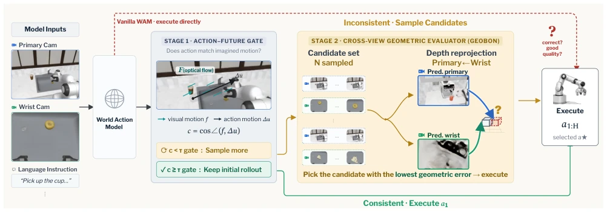
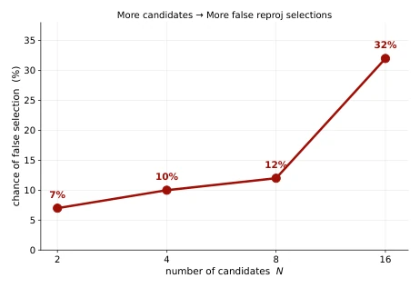
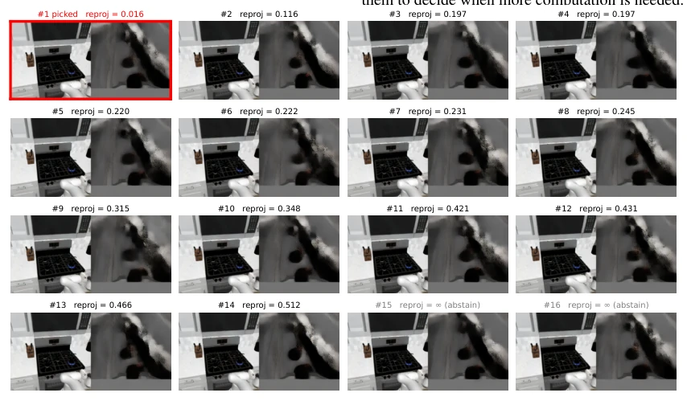

这篇论文给 WAM 的推理加了个“智能开关”，试图解决 Test-Time Scaling 的算力浪费问题。以往方法要么无脑采样 N 次，要么依赖训练好的 Reward Model，成本高且泛化差。作者搞了个 Gated GeoBoN，用几何一致性当裁判，无需训练。好处是训练-free，能利用 WAM 暴露的预测信息；坏处是 N 大了容易选错（False low-score），性能反而饱和。虽然没颠覆世界，但在现有 WAM 上确实能白嫖一点性能提升，算是给推理效率党送了点福利。不过那个几何评估器在 N 很大时反而成了瓶颈，这点挺讽刺，说明几何信号也有噪声。此外，它证明了无需任务标签也能做选择，这对通用机器人很有意义，毕竟标注任务标签太贵了。
This paper adds an 'intelligent switch' to WAM inference, attempting to address the computational waste issue in Test-Time Scaling. Previous methods either blindly sample N times or rely on trained Reward Models, incurring high costs and poor generalization. The authors developed a Gated GeoBoN, employing geometric consistency as an arbiter without requiring training. The advantage is training-free, leveraging predictive information exposed by WAM; the disadvantage is that when N is large, it is prone to incorrect selection (False low-score), causing performance saturation. Although it does not revolutionize the field, it indeed achieves a cost-free performance boost on existing WAMs, offering some benefit to the inference efficiency community. However, the geometric evaluator becomes a bottleneck when N is very large, which is quite ironic, indicating that geometric signals also contain noise. Furthermore, it demonstrates that selection can be performed without task labels, which is significant for general-purpose robots, as labeling task labels is too expensive.
WAM's ability to predict the future is both an advantage and a burden. Existing methods such as RoboMonkey [9] or RoVer [4] require additional training of validators or fixed budget sampling, lacking flexibility. The authors aim to solve: When should the robot compute more? How to select high-quality ones from the rollouts exposed by WAM? Existing methods rely on internal model signals or specific interfaces [14, 17], lacking generalizability. This paper attempts to utilize the multi-view geometric information inherent in WAM itself, without additional training, to achieve selective test-time scaling. This is more reliable than simply relying on internal model confidence and avoids retraining validators for each new WAM. Especially for multi-view WAMs, geometric consistency is a natural signal requiring no additional annotation.
方法Method
整体分两阶段。第一阶段是 Action-Future Gate，用光流和动作投影的余弦相似度判断初始 rollout 是否靠谱。具体计算当前帧与预测帧的光流 F，结合机械臂末端位置投影位移 Δu，若余弦相似度低于阈值则触发采样。第二阶段是 GeoBoN，用冻结的 VGGT-Ω 模型计算主视角和手腕视角的深度重投影不一致性。核心公式是 log 深度比，减少尺度敏感。最后选误差最小的执行。这避免了每次都跑几何评估，只在必要时才用。具体流程：先算光流 F 和动作位移 Δu，若余弦相似度低于阈值则采样 N 个候选，用 VGGT-Ω 打分，选最低分执行。对于每个候选，计算深度重投影误差，忽略置信度低的像素。
The overall process is divided into two stages. The first stage is Action-Future Gate, using the cosine similarity of optical flow and action projection to judge whether the initial rollout is reliable. Specifically, calculate the optical flow F between the current frame and the predicted frame, combined with the projected displacement Δu of the robotic arm end-effector position; if the cosine similarity is below the threshold, sampling is triggered. The second stage is GeoBoN, using a frozen VGGT-Ω model to calculate the depth reprojection inconsistency between the main view and the wrist view. The core formula is the log depth ratio, reducing scale sensitivity. Finally, select the one with the minimum error to execute. This avoids running geometric evaluation every time, using it only when necessary. Specific process: First calculate optical flow F and action displacement Δu; if cosine similarity is below threshold, sample N candidates, score using VGGT-Ω, and select the lowest score for execution. For each candidate, calculate depth reprojection error, ignoring pixels with low confidence.

Figure 1. The action–future gate decides whether the initial WAM rollout is reliable enough to execute directly; when it triggers, GeoBoN samples additional rollouts and selects the candidate with the lowest cross-view depth reprojection inconsistency.
Tested on RoboCasa, LIBERO Long, RoboTwin 2.0 with Cosmos Policy, X-WAM, etc. Fixed budget GeoBoN (N=8) improved success rates, e.g., RoboCasa from 66.3% to 68.4%. The Gated version only triggered 26% of decision points, recovering 75% of the gain. Ablation shows reprojection is more stable than confidence. But performance saturates at N=16, because the geometric evaluator has noise and easily selects false low scores. Comparison with Value Head is also better. This indicates geometric signals are effective task-agnostic selectors. See Table 1 and Table 2 in detail; improvement magnitude varies across different tasks, Coffee Making shows obvious improvement, Door/Drawer sometimes decreases.

Figure 2. False low-score selection rate as the candidate budget increases. Larger candidate pools create more opportunities for Best-of-N to select a spurious low-reprojection outlier.

Figure 3. Representative false low-score selection. The candidate futures are visually near-identical, but the geometric evaluator assigns one candidate an unusually low reprojection error and Best-of-N selects it.